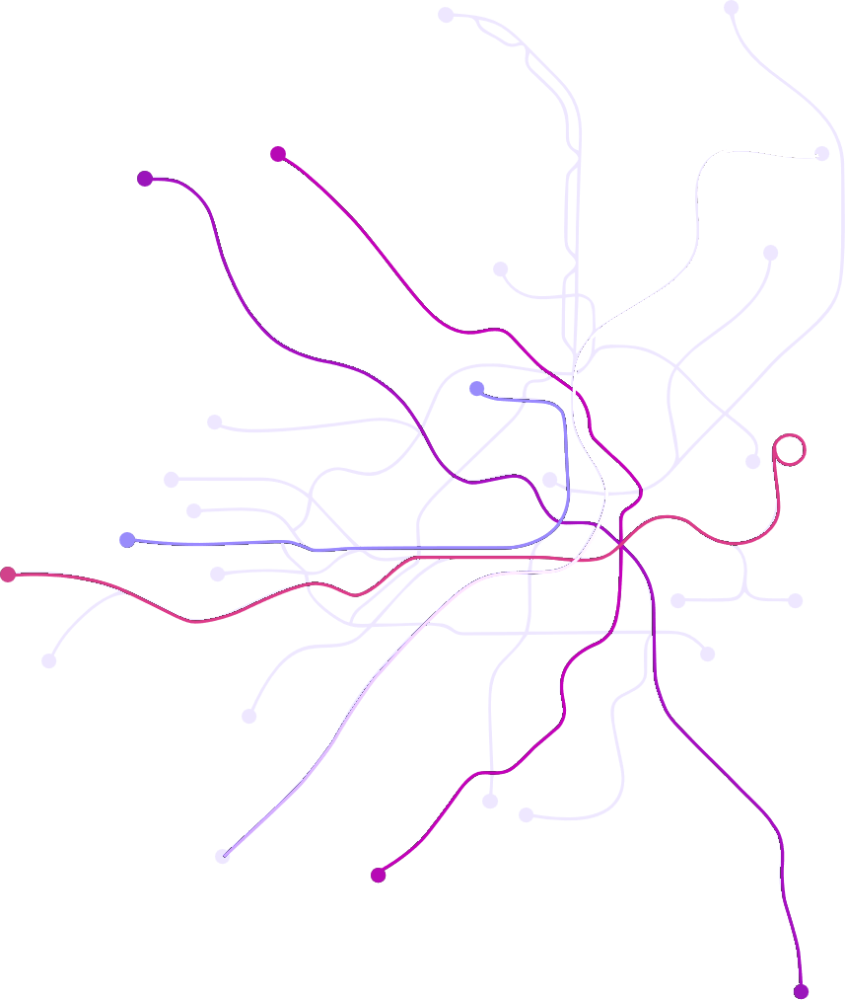
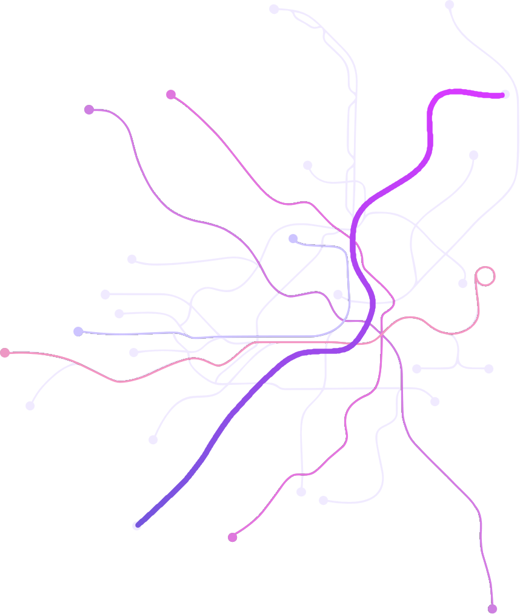

NDC Porto 2026
Aspire is the map your coding agent is missing
Maddy Montaquila · Adam Ratzman
Thursday 19 November · 11:40 · Room 2
Who we are

Maddy Montaquila
Principal PM, Aspire @ Microsoft
@maddymontaquila
Adam Ratzman
Senior Software Engineer, Aspire @ Microsoft
@adamint on GitHub

Modern apps are messy
Environment config
Frontends
Backends
Services
Observability
Agents + AI
Manifests + scripts
Deployment handoff
You’ve become the feedback loop
agent
I started the API for you, and a subagent is watching it for errors. Can you open the frontend and try checkout?
copy-pasting logs
Checkout just spins. The console says:
POST http://localhost:5173/api/checkout 502 (Bad Gateway)
you
agent
My other subagent is still hung up running the API. Can you start Redis, tell me the port and screenshot its logs?
running pieces in isolation
Port 6379, I think? Screenshot attached.
you
agent
Thanks! I’ve written all the ports down in AGENTS.md for next time.
keeping Markdown up to date

Cloud service
Database
Cache
Web API
Frontend
Aspire is an agent-ready, code-first tool to compose, debug and deploy any distributed app.
Code-first dev and deployment for your entire distributed app.
Agents know every detail of your system.
100+ integrations for popular services, platforms and stacks.
OpenTelemetry logs, traces and metrics in one dashboard.
Aspire as your agent's map
AppHost + INTEGRATIONS
Topology
Every service, resource and reference, declared in one place.
LIFECYCLE COMMANDS
Directions
One command to start, stop and restart the whole stack.
OBSERVABILITY
Live traffic
Logs, traces and health, filtered small enough to fit in context.
Guardrails across all of it
SKILLS + CLI
Tested, deterministic steps where it counts, so the agent doesn’t improvise.
The AppHost defines your system in code
apphost.ts
Aspire.Hosting.Redis
Aspire.Hosting.JavaScript
Aspire.Hosting.Docker
await builder.addDockerComposeEnvironment("compose");
const cache = await builder.addRedis("cache")
.withEnvironment("ENV_VAR", "envvar")
.withRedisCommander();
await builder.addViteApp("frontend", "./frontend")
.withReference(cache)
.withYarn()
.publishAsStaticWebsite()
.publishAsDockerComposeService(async (_, svc) => await svc.restart.set("always"));
docker-compose.yaml
frontend: stuck in a container. No hot reload, no debugger.
services:
compose-dashboard:
image: "mcr.microsoft.com/aspire/nightly/dashboard:17.0"
environment:
ASPIRE_DASHBOARD_TELEMETRY_OPTOUT: "true"
ports:
- "18888"
expose:
- "18889"
- "18890"
networks:
- "aspire"
restart: "always"
cache:
image: "docker.io/library/redis:8.6"
command:
- "-c"
- "redis-server --requirepass $$REDIS_PASSWORD \"$@\""
- "redis-server"
entrypoint:
- "/bin/sh"
environment:
REDIS_PASSWORD: "${CACHE_PASSWORD}"
ENV_VAR: "envvar"
expose:
- "6379"
networks:
- "aspire"
frontend:
image: "${FRONTEND_IMAGE}"
environment:
NODE_ENV: "production"
PORT: "5000"
ConnectionStrings__cache: "cache:6379,password=${CACHE_PASSWORD}"
CACHE_HOST: "cache"
CACHE_PORT: "6379"
CACHE_PASSWORD: "${CACHE_PASSWORD}"
CACHE_URI: "redis://:${CACHE_PASSWORD}@cache:6379"
YARP_ENABLE_STATIC_FILES: "true"
OTEL_EXPORTER_OTLP_ENDPOINT: "http://compose-dashboard:18889"
OTEL_EXPORTER_OTLP_PROTOCOL: "grpc"
OTEL_SERVICE_NAME: "frontend"
expose:
- "5000"
networks:
- "aspire"
restart: "always"
networks:
aspire:
driver: "bridge"
Aspireify your stack
Add an AppHost
It sits beside your services and describes how they run and connect.
Keep your code as it is
Your services, languages and frameworks stay exactly where they are.
Deploy your way
Let Aspire deploy it, or keep shipping exactly the way you do today.
> aspire init
OpenTelemetry made easy
Works in any language
Aspire injects the OpenTelemetry settings every resource needs, like its OTLP endpoint and service name.
OTEL_EXPORTER_OTLP_ENDPOINT
Using .NET? Even easier
Service defaults wire up logs, traces and metrics, plus health checks and resilience, in one call.
builder.AddServiceDefaults();
Don’t have OTel? Ask your agent! Aspire’s skills know the setup for each stack.
Visualize a request e2e
One rider question, one trace. Four services, plus the Postgres and Foundry calls they make.

We built our CLI for agents
It’s your agent’s interface to everything you can do and see.
aspire agent init
Sets up Aspire’s skills and MCP for your coding agent.
aspire start
Runs the whole app in the background, tracked and restartable.
aspire start --isolated
A separate instance per worktree, with no port conflicts.
aspire resource <name> <command>
Start, stop or restart one resource, or run its commands.
aspire logs
Resource logs, filtered to what the task needs.
aspire otel
OpenTelemetry traces and spans, from the terminal.
aspire docs
The highest-confidence docs articles for the task.
The agent inner loop
Without Aspire
1
Grep for a README
Work out how this thing is supposed to run
2
Guess the start command
npm start? dotnet run? docker compose up?
3
Hunt for env vars
Copy secrets from a teammate’s .env file
4
Fight a port conflict
Something is already running on port 5000
5
Start services one by one
In the right order, hopefully
6
Change code
Without seeing the rest of the system
7
Ask you what broke
You paste logs and screenshots into the chat
8
Update the Markdown
So next time it knows. It won’t.
Back to step 1
With Aspire
1
aspire start
Run the whole app, then read the AppHost to learn its topology
2
Change code
Edit code, or add a resource or integration
3
Operate
Test user flows and run custom commands
4
Inspect + verify
Check logs, traces and health
Back to step 2 until the behavior is verified, not just healthy
01
Demo
Hand your agent the map
> aspire agent init
One app model, from local to deployed
apphost.ts
One app model
Local
Dev servers, hot reload and the dashboard
Staging
Your agent can stand up test environments
Production
The topology your agent already read locally
“A Log Analytics workspace blew up. My agent worked out why from the AppHost alone, then confirmed it in Azure.”
Maddy, on Bingo
Aspire is the best tool for coding agents
01
Agents get lost in what they can’t see. Give them the system, not just the files.
02
The AppHost is a map they can read. The CLI and dashboard are how you both navigate it.
03
Start today. Aspireify your app with no code changes, run aspire agent init, and give your agent a real task.
aspire.dev · docs and get started
github.com/maddymontaquila/ndc-porto-2026 · this talk’s slides and demos
github.com/microsoft/aspire · star it, file issues
aka.ms/aspire-discord · join the community
Thank you
aspire.dev · @maddymontaquila · @adamint